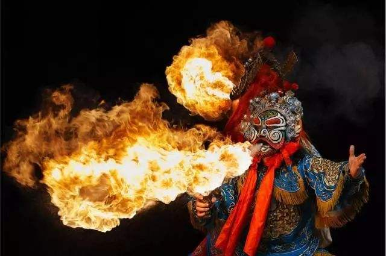

喷火
“喷火”是戏曲演员的一种表演特技。一般都是描写妖魔鬼怪的角色，用来突出舞台效果，使其形象更加逼真，从而达到吸引观众的目的。
表演的时候，版演员嘴里含着一根管子，管子里有松香末和未完全燃尽的纸灰。（纸灰烧的火候很重要，要燃尽但又不能全燃尽）权需要喷火的时候，外面点燃，演员往外吹气，这样就会有火花喷出来。达到妖魔鬼怪喷火的目的。
吐火，是川剧中独一无二的神秘绝技，源于古西蜀，驰名中华梨园。变脸者以魔术般的技法，瞬息间变化脸谱，更与吐火神功的诡异结合，以显示人物内心和剧情的急剧变化及内在张力，是川剧中刻画人物最有力、最浪漫的艺术手法。
吐火有一个绝窍，那就是眼前的火尚未熄灭之时，绝对不能吸气，否则最直接的后果就是“引火焚身”。吐火大概算川剧里最刺激的表演了。演员气沉丹田后微微运气，就能吐出一道火柱。现在的观众只知道吐火就是在嘴里包上煤油，吐到面前的导火索上。然而吐火还有一个诀窍，那就是眼前的火尚未熄灭之时，绝对不能吸气，否则最直接的后果就是“引火焚身”。